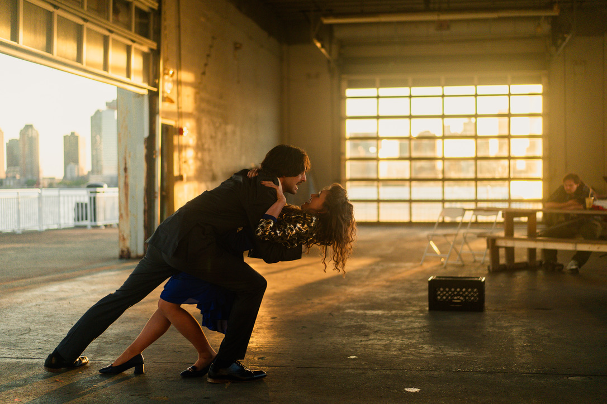

Photo by Jackson
Hi! My name is Karin (pronounced CAR-in). Most of my childhood was spent doing theater in my grandparents’ barn in Middleburg, Virginia. I recently finished my MFA in Acting in Classical and Contemporary Text at The Royal Conservatoire of Scotland, and before that I received my BFA in Acting from Emerson College. As a performer and audience member, I’m drawn to physical theater, devising processes, experimental retellings and new writing. Some of the things I’m curious about in my work right now include: what people do all day, girlhood and swans. In addition to acting, I write, produce, and teach after school theater in Brooklyn. Thanks for stopping by :)
As Scout in feature film "Humbly Yours, Hassock."
Photo by Jackson
As Kat in an adaptation of "Taming of the Shrew." Photo by

Photo by Jackson
Still from short "Jenny Jump Road"

As Luciana in "Comedy of Errors" with Stairwell Theater. Photo by
As Dodo in "HONEYDEW NO.2." Photo by Cecilia Thoden van Velzen, edited by Jackson Kienitz.